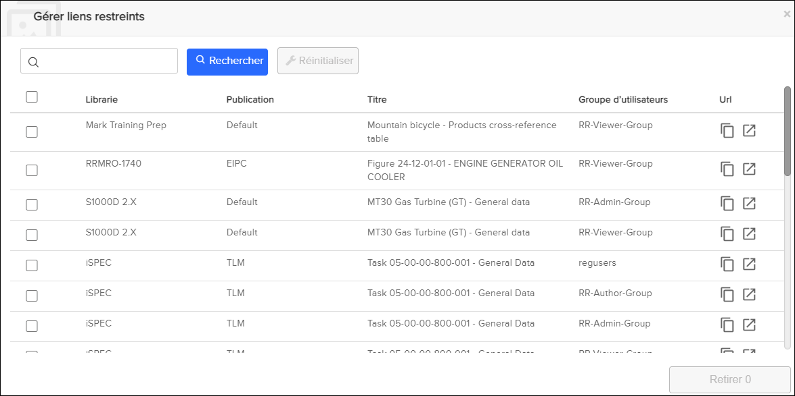
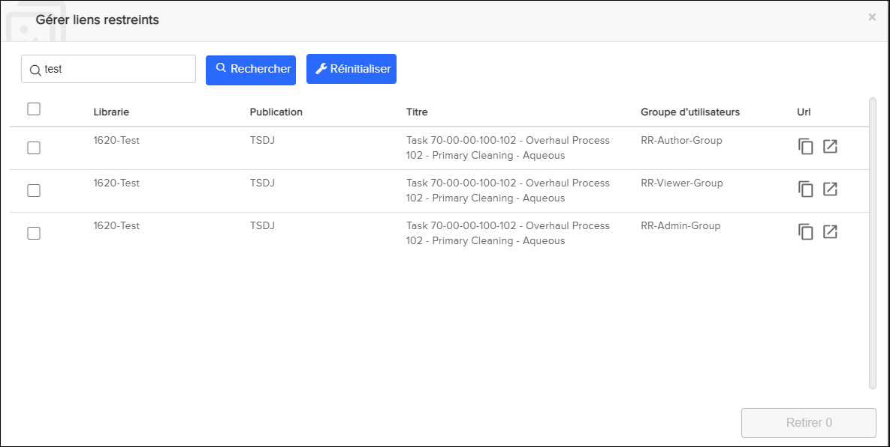

Non applicable pour Pinpoint Standalone/Pinpoint Standalone Light.
Après avoir créé des liens restreints, un utilisateur administrateur disposant des
autorisations pour le privilège Can create or remove restricted links peut
gérer les liens. Ce privilège permet à l'utilisateur administrateur d'effectuer ces
fonctions :
- Effectuer une recherche plein texte
- Copier les liens restreints
- Ouvrir les liens restreints dans un nouvel onglet
- Supprimer les liens restreints
Pour gérer les liens restreints, procédez comme suit :
-
Sélectionnez l'icône
 Gérer liens restreints dans la Barre
d’action.
La boîte de dialogue Gérer liens restreints s'affiche, par exemple :
Gérer liens restreints dans la Barre
d’action.
La boîte de dialogue Gérer liens restreints s'affiche, par exemple :
-
Sélectionnez l'une de ces options :
- Saisissez un mot-clé dans le champ Rechercher
puis cliquez sur Rechercher pour effectuer une
recherche plein texte.
Les résultats de la recherche apparaissent, par exemple :

- Cliquez sur l'icône
 Copier pour copier le lien restreint.
Copier pour copier le lien restreint.Vous pouvez envoyer les liens restreints copiés aux utilisateurs qui ont le privilège d'afficher les liens.
- Cliquez sur l'icône
 Ouvrir dans un nouvel onglet pour ouvrir le
lien restreint dans un nouvel onglet.
Ouvrir dans un nouvel onglet pour ouvrir le
lien restreint dans un nouvel onglet.Vous pouvez ouvrir les liens sélectionnés dans un nouvel onglet.
- Sélectionnez un ou plusieurs liens restreints, puis cliquez sur
Supprimer pour supprimer le ou les liens
restreints.Remarque : Le bouton Supprimer devient rouge lorsque vous sélectionnez un lien restreint. Le numéro sur le bouton indique le nombre de liens sélectionnés. Par exemple:Un message de réussite s'affiche et le ou les liens sélectionnés sont supprimés.
- Saisissez un mot-clé dans le champ Rechercher
puis cliquez sur Rechercher pour effectuer une
recherche plein texte.